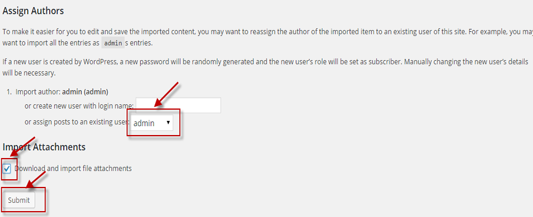
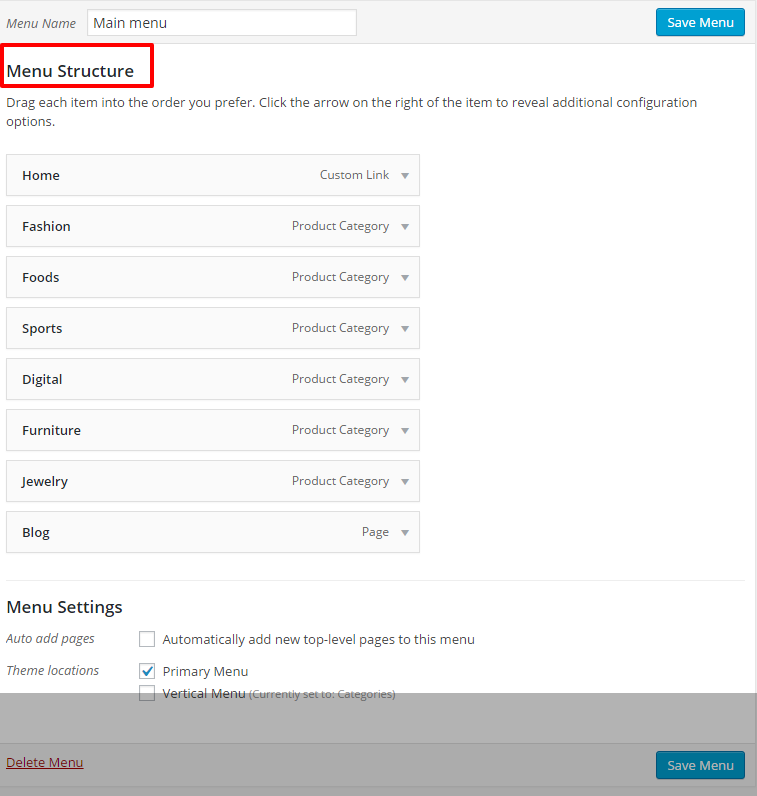
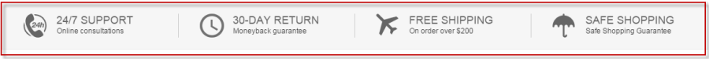
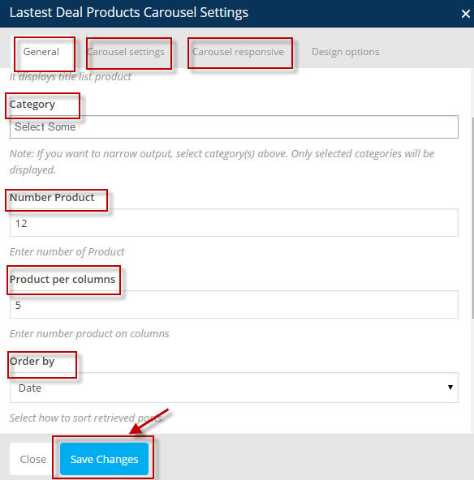
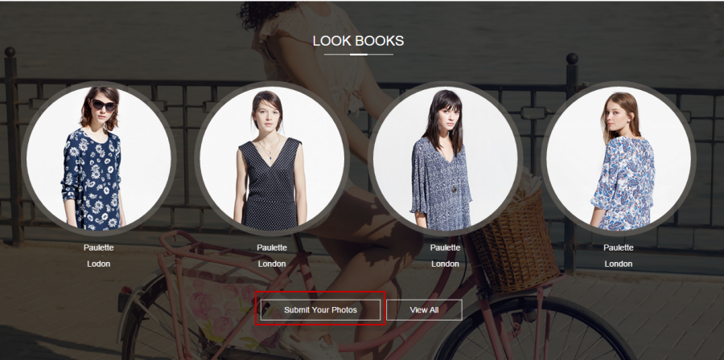
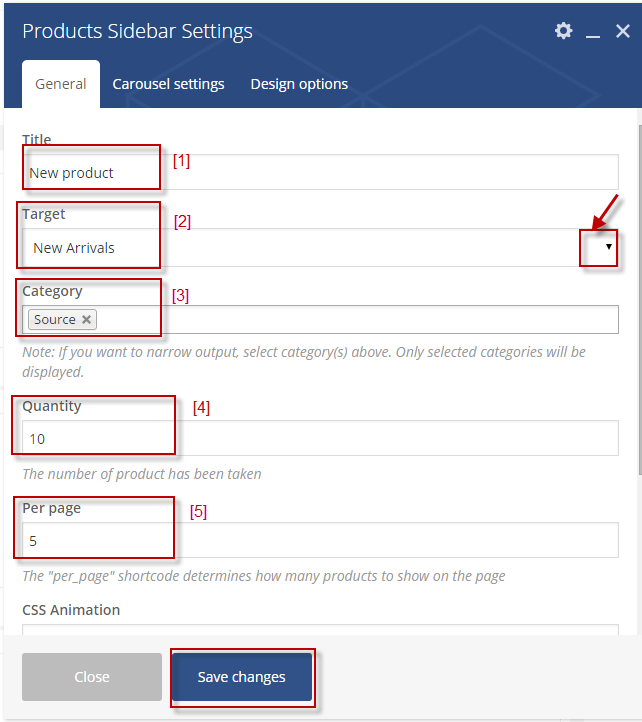

Getting Started
To install the Kute theme. You need to have a version of Wordpress. You can download from here: the download URL. , make sure that you had all needed Wordpress setting. You can install this theme following the way below:
Installation
1. Automatic Installation
Step 1. Download ZIP package from Themeforest and then unzip it.
Step 2. In unzipped folder you will find a folder named "Theme-kuteshop" and 2 archives: "Kutetheme.zip" file and "Sample Data"
Step 3. In your Wordpress Dashboard, navigate to Appearance > Themes.
Step 4. Click on Add New, then clicking on Upload Theme and browse the Kutetheme.zip file, finally click Install Now.
Step 5. Wait for a while untill the screenshot below appears, on this form clicking on Activate link to active Kute Theme. Theme has been installed and actived or you also click Live Preview to view this theme.
2. Install Needed Plugins:
Kute theme recommended you use the following plugins:
- Visual Composer - Visual Composer for WordPress is drag and drop frontend and backend page builder plugin that will save you tons of working time on the site content. You will be able to take full control over your WordPress site, build any layout you can imagine – no programming knowledge required. Moreover, now you can choose either work on a backend or move your page building process to frontend and instantly you can see the changes you made.
- Revolution Slider - is a premium plugin( Official Page ) which lets you create stunning full-width, full-screen, normal sliders, all responsive with nice effects.
- Contact Form 7 - Just another contact form plugin. Simple but flexible.
- Kutetheme toolkit - A Toolkit for Kute theme, consist of post types, mailchimp....
- WooCommerce - An e-commerce toolkit that helps you sell anything that you want.
- WooCommerce Variation Swatches and Photos - allows you to configure colors and photos for shoppers on your site to use when picking variations. Notice that you need to purchase this plugin to use for your site, you can follow the link: http://codecanyon.net/item/woocommerce-color-or-image-variation-swatches/7444039 to buy the plugin WooCommerce Variation Swatches and Photos.
- YITH Woocommerce Ajax Prduct Filter - Help you filter the product list without reloading the page
- YITH Woocommerce Compare - allows you to compare more products with woocommerce plugin, through product attributes.
- YITH WooCommerce Wishlist - help you to add Wishlist functionality to your e-commerce.
After installed Kute theme you will be noticed to install required plugins, just follow the instruction you will get all settings.
The installation process may take few minutes, so please be patience. All plugins have been Installed and activated successfully in one -click.
Follow next steps if you want to install sample data like our demo website.
3. Importing Sample Data.
Notice that: Before you import our Sample Data, you need to set up the image size of your product as you want.
You may go to Dashboard=> Woocommerce=> Settings=> Product=> Display, scrolling down to the Product image and setting the size suitable with your site.
Remember to save your setting.
If you arw using the theme to build a new website which doesn`t have content yet, I strongly recommend you to use the demo content files. This theme includes xml data files which will allow you to upload the demo content to your website. The content is the same as in the Live Demo Preview.
3.1 Import Demo content.
Step 1: Go to Dashboard >>Tools >> Import
Step 2: Click on Wordpress to Importer:
Step 3: Install plugin WordPress Importer
Step 4: Click on Choose File button and browse to the folder that you save the file. Find the filename.xml file then click Upload file and import button:
Step 5: Check Download and import file attachments checkbox and select user for post's author before submit to starts import sample data:

Wait for the importer working until this pop up appear that meant your import completed.
3.2 Import Layer Slider data.
Step1: Go to Dashboard=>Revolution Slider
Step 2: Import sliders
The Import Slider popup will appears, click Choose File button then browse to ... "slider1.zip" in the Sample Data folder and click Import button:
The slider 1 have imported successfully.
Manipulate the similar steps to import the others slider.
3.3. Import Widget: You can follow these steps below:
Step 1: Go to Dashboard >> Plugin >> Add New
Step 2: Fill in the keyword: “widget importer & exporter” to the search box.
Step 3: Click on the “Install Now” button to install the Widget importer & exporter plugin .
Step 4: Activate this Plugin:
Step 5: : Go to Tool => Widget Importer & Exporter and choose the filename.wie to import the widget:
3.4 Setting Homepage and Blog page
- From Dashboard >> Settings >> Reading
- It will takes you to the Reading Settings page, from this page you should care about some of the following selections:
In the "Front page displays" section, check on the button list "A static page"[1], then select Front page [2] and Post page[3] like the screenshot above if you want the front page display as our demo or you can also make your own front page displays.
Finally click on "Save Changes" button to save your settings.


4. Menu Setting.
You have to go to Dashboard >>Appearance >>Menus to set menu like our demo menu.
Select Manage Location tab to set theme Location and Assigned Menu:
Notice that you have to create a menu then you can select which menu will appear in each location. For example: make main menu like our demo, you following some steps as the screenshot below:
Scrolling down to the section "Menu Settings" to assign the menu to the "Primary Menu" location. Finally click on "Save" button to save the setting.
[1]: Select a menu to edit
[2]: Select main menu to edit structure.
[3]: Name of menu: you can set the name for the menu you want to create.
[4]: Theme locations: set the position of menu (Primary Menu)
[5]: Click Save Menu to save the setting.
[6]: Click Delete button to delete menu if you don't want it to display on your homepage.
1. Adding Logo and Favicon
Go to Dashboard >Theme Options
It will take you to the Theme options page. In this page, you can setting attributes for your site and it depends on your intention.
The first important thing when you go to Theme option setting, you should care about the General tab setting to set the attribute for your page, you need to complete the form below:
From the image above, you can select the page you want to show on your site like the Service page, Support page and page About us.
Secondly, go to "Logo" tab, you will see 3 main parts: Logo [1], Logo Footer [2] and Favicon [3]
- You can upload your site's Logo [1], Logo in Footer [2] and Favicon [3] as you want. Do not forget click on the "Save" button to save information.
- Logo on your site after uploading:
2. Header setting
2.1. Select the Header
Go to Dashboard >Theme Options
- In Theme Options Settings, go to Header tab and choose the Header option that you want to display on your Homepage.
For above form:
- Header : Click on any header layout that you would like to apply for your theme.
- Then click on "Save" to save the setting.
2.2. My Account box
In our theme, you can use the default My Account box on the Header or you can disable it then setting as you want.
To configure this box, you can go to Dashboard/ Theme option/ Header/ Enable hook, click on the arrow down on the right side of My Account box as the image below:
You can also set the specific attribute for the Header such as: Ads text for Header style 3 or Setting category service in header 7.......... by click on the that Header then complete the needed information.
3. Creating Advance Menu.
This section will guide you how to create the menu like our demo in mega menu format. Mega menu supports for creating two main components are Main menu (level 1) and Submenu (level2). After installing Kute theme, the demo data for menu will be automatically installed. You can see the style of the top menu in the front-end demo. But you need to change the image and the links suitable your shop site.
These images below are the detail instructions for using this section:
Main menu (level 1) consists of multi-items, each item has or hasn't a Submenu (level 2). In the Installed demo menu, there are 8 items in Main menu (level 1): Home, Fashion, Foods, Sports, Digital, Furniture, Jewelry, Blog. As the above screenshot, Submenu (level 2) of item Fashion is shown.
If you would like to manage the menu. You can do following these steps:
3.1 How to create Main menu (level 1)?
Go to Dashboard=> Appearance => Menus
- Click on "Create a new menu" button.
- Give your menu a name[2], then click "Create Menu" button.
- Set location for this menu as Main menu [3].(or Primary menu)
Then, click Save Menu to save the setting. Main menu has been created, We continuously add items for the Main menu and you can see our Main menu structure.

3.2 How can I create my own sub-menu (level 2) for item in the main menu (Menu level1)?
Example: Create a sub-menu for the item: "Fashion" in the main-menu such as the screenshot below:
- First, you have to click on the arrow down on the right of Fashion item to edit, then you choose "Enable Mega Menu" and select the menu page (post type mega menu).
How to create a post type mega menu?
Go to Dashboard=> Mega menu=> Addnew to create a new Mega menu (such as Fashion) and you can build it as you want by Visual composer.
You can see our demo post type mega menu structure:

In our demo, we used 2 shortcodes: Single Image and WP Custom Menu, you can change the image and the menu as you want then save and update it.
4. Footer Settings
To set the Copyrights look like our demo:
You need going to Dashboard =>Theme options
- It will take you to the Theme Option Setting =>Footer tab and you can configure settings for the footer tab and it will appear on your site's footer.
In this tab, we give you 3 type of Footer and you can also select the Footer display on your site as you want.
How to create the contact on your footer such as: address, phone or email....?
You just need go to Dashboard=> Theme options=> Infor and complete all the needed information then Click Save button to save the setting.
5. Footer Widgets

You can use both default widgets and Kute widgets to build your own footer contents.
To manage Footer widgets, go to Appearance >> Widgets
You only need to drag and drop the widget or click on it then add to the footer you want to show.
There are 7 footer sidebars: Footer Menu1, Footer Menu 2, Footer Menu 3, Footer social, Footer Payment, Footer Bottom, Footer Menu Bottom. You now only drag some widgets to these sidebars, to do it looks like our demo footer, please see following screenshots.
From the image above, we used some widgets:
5.1 Footer column1: We use one widgets for Footer column1: "Custom Menu"
5.2 Footer column2: using widget "Custom Menu"
5.3 Footer column3: using "Custom Menu" widget
5.4 Footer Social (column4): using "KT Mailchimp" and "KT Social " widget
5.5 Footer Payment (column5): using "KT Trademark Payment" widget
5.6 Footer Bottom (column6): using "KT SEO Keyword" widget
5.7 Footer Menu Bottom (column7): we use the " Custom Menu" widget.
We will give you an instruction for using Custom menu widget (Column 1) and you need to create others footer column.
Firstly, you create a menu (for example: Company), then you set the Title and Select Menu that you want to display on your site's footer.
Do not forget Save button to save all the settings.
6. Woocommerce Setting
Go to Dashboard >Theme options
- It will take you to the Theme Options Setting, go to Woocommerce, you can configure some attributes as you want on your shop page such as:
You can see our demo Woocommerce setting:
7. Vertical menu
Refer to the section " 3. Creating Advance Top Menu" on this document to create vertical menu. Note that your have to set location for this menu as Vertical menu by scrolling down to the section "Menu Setting".
Let's see our demo Vertical menu structure:.
Setting Vertical menu Style:
If you do not want the Vertical menu show on your site: you just need go to Dashboard=> Theme Option=> Header, scrolling down to the Vertical menu section, you can click on the arrow down on the right site of tab [1] and select Disable, after saving your setting, the vertical menu will be disappear.
You can see the image below:
We give you another choice:
If you still want to use the Vertical menu but you do not want it always open, it only open when you click on, you may select Enable for user Vertical menu and Enable tab Collapse [2]
You can also set the number of visible Vertical menu items show on your page [3]
Do not foget saving your setting.
If you want to configure like our demo:
You just go to Appearance=> Menu=> Create a new menu, for example: Top bar menu right and set the Location for menu as Top bar menu right:
You do the similar step to create the menu on Topbar Menu Left location.
We want to tell you about the icon in Top bar Left menu, you just can add html on this menu, in our demo we use the awesome font, if you want to find more icon, you can follow the link: https://fortawesome.github.io/Font-Awesome/, click on the Icon and find the icon you want.
Lets see our Top bar Left Menu structure:
Once again you can see the location of the menus:
9. Setting the color of Theme
If you want to configure the color for your theme, you just need go to Dashboard/ Theme option/ Color: In General Tab, you can set the general main color, back ground color and price color by click on the select color box and choose the color you want. Remember to save your setting.
You can see the image below:
If you want to setting some color for item of Vertical menu, you can forward to Vertical Menu as this image:
In this Tab, you can set the Back ground color, Text color, Menu item hover back ground color and Text hover color suitable with your site.
We give you many choices to configure the color of all Header from Header 1 to Header 13, you can forward to the Header you want to setup then configure all the attributes for your Header:
KUTE SHORTCODES
We have used both default shortcodes and our Kute shortcodes to build our Kutetheme.
1. Service
This shortcode will help you to display all your services on your site and your commitment about your service, it will make the customer has a good overview about your shop such as safe, good support and a large system all over the world......
To set this shortcode, first you need to go to Dashboard=> Service=> Add new and complete all needed information such as name of service, subtitle, short description, featured image......to create all your service (post type service) item.
Notice that, you can setting the service oder by name, date, author, rand.....it depends on your meant, and about Display Style: we have 2 style then you will choose the style as you want to display in your homepage.
If you choose the Style 1:
It will show on your frontend as:

And here is the frontend when you choose style 2 on the Display Style:
And Style 3 of Service:
2. Tab Products
Using this shortcode, you can display all types of products on your site according 3 criterias: Best sellers, On sales, New Products.
Best Seller: If you want to display the product here, your site has to some best selling products, that meant, if there is no best selling product, this section will be empty.
Onsale: if your products have disccount product, it will be shown on Onsale section.
New Product: when your site have the new product, it will be display on New Product section
You can see our demo:
Notice that, you need to setting some attribute for this shortcode:
Firstly, in General setting: You can select some categories that you want to show on your Tab. If you do no select specific Category, it will be show all your products of all Category that covering 3 criterias above.
In Tab prduct setting, you can select the amount of product will show on page and some others attribute, you can see the image belowSecondly, setting Carousel:
You should care about some attributes:
[1]: AutoPlay: your product on Products tab will be auto display, you do not have to click to Next button to see others product.
[2] Navigation: you can use the "Next" or "Prev" button to see the product in the Products Tab. If you choose "don't use Navigation" it will not display the "Next" or "Prev" button any more.
[3] Loop: Duplicate last and first items to get loop illusion.
[4] Setting slide speed in millisecond.
[5] Margin: setting distance between 2 items.
Click Save button [4] to save the setting.
Thirdly, you can setting Carousel responsive: you can select the items you want to show on some devices such as desktop, tablet and mobile.
You can also select Style 2 for your tab, if you choose this style, it will display on your site as:
and here is Style 3:
3. Latest Deals: display the products that have the Sale Price Dates, it will show the detail time of the product on sales one by one.You need to set the Title, select the Style, choose category will be displayed, Number of product will be shown, and the Oder by. You can also setting Carousel if you want.
Then click Save button to save your setting.
After you save the setting, it will show in your frontend as Style 1:
or Style 2:
4. Latest Products Carousel: it will help you to display list of products on sales, you should care about some attributes in General setting such as the Title, select category that you want to display, number of product......and you should care about Carousel setting & Carousel responsive suitable with your site.

The Latest Products Carousel will be displayed:
5. Popular Category: display the category that you choose. Notice that you select the category one by one. You need to set the Title, Type, select the category will be displayed, number child category....... to show on your page.
Click on Save button to save your setting.
You can see our demo Popular category in style 1:
And Style 2:
6. Categories Tab: display the category that you choose such as Fashion, Sports, Electronics, Digitals............consist of the product will show on your page.
You can see a Category of our demo:
To setting like our demo, you need to care about the Categories Tab Setting [F1] and the Section Tab [F2]
About the Categories Tab setting, you have to set all the attributes following the image below:
Especially, you need to care about the Tabs Type because we use many types of tab when setting our demo, you can use the tab type suitable with your site.
How about the Section tab Setting [F2]?
You need setting the header, choose the Section Type (it can be Best Sellers, Most Reviews, New Arrivals, Custom (displayed Specials), Category (choose category you want to show)......) then click Save Change button to save your setting.
Tab 1:
Tab 2:
Tab 3:
Tab 4:
Tab 5:
Tab 6:
Tab 7:
7. Categories: display all the category that you choose without the products. The image below is shown the needed information to setting this shortcode.
And our demo:
8. List Products: you can choose the number product of a category that you want to show and it is usually necessary to create the sub item for the Vertical Menu as our demo:
To setting this shortcode, you just need create a Title [H1], Choose category [H2] you want to display by click the arrow down on the right side of this part, Select number product [H3] and the type of animation that you want to view [H4].
Click Save button to save all the setting.
9. Mailchimp
This is a very useful shortcode, MailChimp helps you to email the right people at the right time. You can send automated emails based on customer behavior and preferences, it will help the customer to receive all the information from your online shop such as: sales, new products.....
You need go to Dashboard=> Settings=> Mailchimp setting and enter your mailChimp API key [1] to enable a newsletter signup option with the registration form. After that it will show the email list [2]. You can see more about the Mailchimp according the link: mailchimp
And you may also configure some attributes for this shortcode to make it looks like our Demo 14.
Step 1: Add the Mailchimp shortcode to your page structure:
Step 2: After added successfully, you will see Mail chimp setting and configure this shortcode as the image below:
You can also set the success message and other attributes by scrolling down to the end of Mailchimp setting.
Step 3: Add the background for this section:
How to add it?
In Home page structure, click on the edit icon of the row that consist of Mailchimp shortcode, select Design option then configure the Background as this image:
After saving your setting, it will show on your page as our demo:
10. Brands
This shortcode will helps you to display a name, design, symbol or other feature of all the brand on your online shop. You can see our demo:

To setting like this,First, you need to go Dashboard=> Products=> Brands to create all the information of all the brand: name,description, thumbnail.....
Then you just need to care about the title and the Show product: click Yes to show the product. Beside that, if you do not want to show the product brand, you can select No.
Beside that, If you click on the arrow down on the right side of the Line box, you will see 4 style of Brand, you can select the style suitable with your site.
When you select 1 line:
and 2 line:
Show logo Style 1:
And here is style 2 show logo:
11. Blogs: display all of your blog post on your site.
To setting your blogs on your site looks like our demo, you can following these steps:
Step 1: Go to Dashboard=>Post=>Add new to create your post: title, content, select categories and set the featured image.
Step 2: Blogs settings_ you need to complete the information follow this form:
You can also setting Carousel if you want. Click Save button to save the setting.
Notice that, you will have 5 Blog style:
Style 1:
Style 2:
Style 3:
Style 4:
Style 5:
As you can see on our demo, you need to use some widgets to setting the Blog post page (make sure that you have been created a Blog page, if not, you can go to Dashboard=> Pages=> Add new page to create one), you just need to add some widgets to Widget Area [1]
From the image below, you will see some widgets that we use to set this page consist of Wordpress widget and Kutetheme widgets.
[2]: Categories
[3]: Wordpress Popular Post.
[4], [7]: KT image: you just need to select image and set the link for each image display
[5]: Recent Comments: you set the title and the number of comments that you want to show on your Blog page.
[6] :Woocommerce Product Tags
After all setting, you can see our demo:

12. Kute Featured Product: Show the feature products of your online shop.
You can see our demo:
To configure this shortcode, you should care about some attributes like the image below:
[1]: Enter the title of box
[2]: Select the type of box by clicking on the arrow down on the right side of Box Type, it can be Featured or By IDs
[3]: Fill in the number of products put out from your store.
[4]: Click to Save button to save your setting.
Notice that you need to choose "what is your featured product?"
You can go to Dashboard=> Products=> Products: on the top of Product list you may see a Blue Star icon, if you want to select any product as feature product, you just need click on the Star icon of that product like this screenshot:
13. Hot Deals Tab: Show tab Hot deals.
If you want your Hot Deasl tab looks like our demo:
You should care about 2 main settings:
Firstly, Hot deals tab setting:
Secondly, Section tab setting:
You need to complete all the needed information as the image above then remember clicking on Save change buton.
14. Box Product: show list product in box New Arrival, Top Seller in, Special Product......
Here is some needed information you may configure if you want to create this shortcode:
[1]: Enter the Title of Box
[2]: You can choose the Type of product will be shown on box by click on the arrow down on the rightside of Type section, it can be: New Arrival, Most Review....
[3]: Select the Style of Box Product that you want to show on your Homepage by click on the arrow down on the rightside of Box Style tab.
[4]: Select some categories display on Box Product.
[5]: Enter the number of product will be show.
[6]: Setting the main color of Tab.
[7]: Upload the banner for the Box
[8]: Click Save button to sane your setting.
You can see 4 box types of our theme:
Style 1:
Style 2:
Style 3:
Style 4:
15. Hot Deals: show box Hot Deals
To configure your box looks like our demo:
You may complete the needed information as this image:
16. KT Look Books: show all the products that the customer used.
Lets see our demo:

If you want to configure your site looks like our demo, first you need go to Dashboard/ Look Books/ Addnew and complete all the needed information: name, Featured image and the Location that the customers live, you can look at the image below:
After you created all your Look Books, you can drag the KT Look Books short code to your Home page and setting it:
From the box above:
[1]: enter the title of Look Books.
[2]: set the number of Look Book to display on this Tab.
[3]: Select the color of overlay as you want.
[4]: Configure the opacity of the overlay from 0.1 to 1 (in our demo, we set 0.7).
[5]: Enter the custom link for submit photo, it may be your email page or the contact page, after setting whenever you click on the "Submit your photo" on Look Books section, it will lead you directly to the link form that you already set before.
You can also setting the number of Look Books will be show per slide by go to Carousel responsive tab and set the quanlity for specific device.
Beside that you can configure the background of Look Books section: In edit page, click on the Edit icon of the Look Books short code Row as this image:
You can upload the image and add parallax type background for row, Notice that if no image is specified, parallax will use background image from Design Options. You may click on the arrow down on the right side of Parallax box to select the type you want.
If you would like to use the video background, you can tick Yes on the checkbox "use video background" , after saving and update your setting, it will show on your site.
17. KT Collection: display the Collection on your online shop.
To configure this short code, you can follow these instruction below:
Step 1: Go to Dashboard/ Collection/ Categories and create your Collection categories.
Step 2: Dashboard/ Collection/ Add new and fill in the information about the Name, Content, Designer and Featured image. Remember to save your setting.
Step 3: Go to Home Page, drag the KT Collection short code to your page and setting this short code:
You need to fill in the name of this section and default display style is style 1.You can also choose the categories will be show on your site, if you do not choose the specific category, it will show all the categories that you created.
About the number box, you may set the number of collection put out from your site on that box.
If you want to set quanlity of collection per slide, you can go to Carousel responsive tab and set the quanlity for specific device.
After complete your setting, it will display on your front-end as:
18. KT Testimonials:
Configure this short code will help you to display your site's Testimonial like our demo:
Firstly, you go to Dashboard/ Testimonial/ Add new, complete all the needed informations as the image below:
Secondly, you need to drag the short code KT Testimonials to your Home page structure and cofigure it.
From the form above:
[1]: Fill in the name of this section as you want.
[2]: Select Style of Testimonial box: Style 1 and Style 2.
[3]: Default number of Testimonial per page is "four".
[4]: Select the color for overlay.
[5]: Set the overlay opacity, we select 0.7 for our demo.
Do not forget saving all the settings.
In addition you can configure the background of Testimonials section: In edit page, you may click on the Edit icon of the KT Testimonials short code Row as this image:
You can upload the image and add parallax type background for row, Notice that if no image is specified, parallax will use background image from Design Options. You may click on the arrow down on the right side of Parallax box to select the type you want.
If you would like to use the video background, you can tick Yes on the checkbox "use video background" , after saving and update your setting, it will display on your site as the our demo.
Here is the result when you select Style 2 for your Testimonial:
Lets see our demo:
Setting this short code very simple, you just need go to your Homepage buiding (Add new page or Edit page using Visual Composer), add the KT Banner Text short code and setting as this image:
Please remember to save your setting.
You may look at the image below to know about this short code:
Setting this shortcode, you can go to Page/ All Pages/ Home page Edit, click on edit icon of KT Banner, you will see KT Banner setting then you can configure it.
You will have 3 KT Banner styles:
Style 1:
From the image above:
[1]: Select Style you want (Style 1)
[2]: Upload the image of Banner.
[3]: Fill in the custom link of the Banner.
[4]: You can Enable or Disable the CountDown as you want by clicking on the arrow on the right side of this box.
[5]: Enter the Countdown text such as Hot Deal....
[6]: Fill in the Time you want to show on your Banner.
After saving your setting, it will be displayed on your site as:
Style 2:
If you select Style 2, you will see the form as this image:
You need to complete all the needed information as the form above, notice that you will have 3 choices with the Background: Show, Hide, Show text and background.
Here is result when you select Show Background:

And when you select Hide Background, it will show on your site like this banner:
If you choose show both Text and Background, your banner will be displayed as:
Style 3:
When you select Style 3 for your banner, you will see the setting like this image:
You can see that, in this Style, you may fill in the ID of Product you want to show on your banner, it will help you to show your favourite or your Featured Product on your Home Page.
21. Categories Carousel: Show the Category you select to display on your site.
In your Homepage Edit, when you click on Edit icon of Categories Carousel short code, you will see all the setting of this short code and you can configure it as you want.
You should complete all the needed information as the image above such as the Title, select Category, upload background image....
Notice that, if you do not enter the Title and Sub Title, it will not show on Categories Carousel box as this image:
And when you have a Title, sub Title, your Categories Carousel box will display as:
Setting this shortcode, you need to care about some attributes as the image below:

From the form above:
[1]: Fill in the Title of Tab.
[2]: Choose the criteria of product, it can be new product, best seller, most review..............
[3]: Select category will be displayed on your Product sidebar.
[4]: The amount of product has been taken.
[5]: Fill in the number of Product to show on the page.
Do not forget saving your setting.
23. KT Single Product
You can see our demo:
How to configure this shortcode?
Step 1: Go to your Homepage structure and add KT Single Product shortcode to your page then configure it:
Step 2: Add the background: In Home page structure, click on the edit icon of the row that consist of KT Single Product shortcode, select Design option then configure the Background as this image:
KUTE WIDGETS
1. KT Image
Select or capture the image you want to show then set the link for the image, you will have KT image display on the single area of your shop.
You can see these widget display on our demo:
2. KT Slider: using this widgets will help you show the image on your Shop area, ), or .
One simple manipulation to set this widget that you select the image you want to show and choose the link for each image.
Click Save button to save the setting and it will show as:
3. KT Special Product: you can show Special products of your online shop and the customer can approach your products easier.
Setting this part, you need complete the form as the image below:
It will display on your site:
4. KT Testimonials_ Show information about Testimonials such as: name, experience.....
Firstly, you go to Dashboards=> Testimonials=> Add new to create your testimonial's information.
After that, you can set the Title and the attribute for KT Testimonials like this image:
You can see the frontend:
5. KT Best Seller _ display the best seller product.
You can set some attributes as the form below:
After setting, it will display on your page:
6. KT On sale_ show products have sales price, you should care about some attribute like the Title, number of products will be show on your shop single area.
Let's see our demo:
7. KT Trade mark: display all trade mark on your homepage.
You need to create the Title, select an Image to upload and choose the link that you want to display for all the items in this widget.
Then, click Save button to save the setting and it will display on your frontend as:
8. KT SEO Keyword: display link and text for SEO.
You just set the Title of items and enter the link for each items will appear on your site.
Then click on Save button to save all the settings
You can create amout of "KT SEO Keyword" as you want. (in our demo, we used 3 "KT SEO Keyword")
9. KT Mailchimp & KT Social
The screenshot below will show the form you need to setting KT Mailchimp:
Configure setting for "KT Social" widget:
To create this Widget, first you can go to Dashboard=> Theme options=> Socials and choose some link to display on your homepage.
Then you can set the title for this item:
After save the setting, your frontend looks like the screenshot:
==================================================================================================================
Let's see some shortcodes that we applied on homepage style1; homepage style2; homepage style3.
1. Homepage style1

For above form, some shortcodes are used:
- [1]: Service
- [2]: Tab Products
- [3]: Lastest deals
- [4],[5],[6],[7],[8],[9]: Categories Tab
- [10]: Single Image
- [11]: Brands
- [12]: Categories
- [13]: Mailchimp
2. Homepage syle 2

For above form, here are some shortcodes we used:
- [1]: Lastest deals products carousel
- [2],[3],[4],[5],[6],[7]: Categories Tab
- [8]: Single Image
- [9]: Blogs
- [10]: Service
- [11]: Mailchimp
3. Homepage style 3

For above form, we used some shortcodes:
- [1]: Popular category
- [2]: Single Image
- [3],[4],[5],[6],[7],[8]: Categories Tab
- [9] Brands
- [10]: Blogs
- [11]: Service
- [12]: Mailchimp
Thank you!
Once again, thank you so much for purchasing this template. If you have any questions relating to this template, you can submit a ticket on our support system: http://support.ovicsoft.com/support-system . We'd be glad to help you.